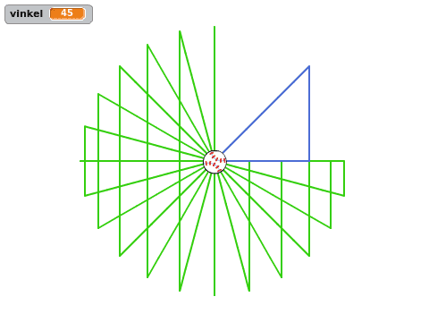

Flagg viser hvordan man kan bruke kloner til å animere et flagg. I animasjonen
bruker sinus og cosinus for enkle sirkelbevegelser. Disse funksjonene blir
raskt introdusert og elevene får muligheten til å eksperimentere litt med dem.
Bakgrunn
Flagg ble opprinnelig skrevet av Sverre Oskar Konestabo som et bidrag til
programmeringskonkurransen som ble avholdt for barn som deltok på Kodeklubben
Blindern våren 2016.
Forberedelser
Antatt tidbruk: 1.5 - 2 timer for hele prosjektet.
Nødvendige forkunnskaper: God kjennskap til Scratch. Elevene bør ha gjort
flere prosjekter på Introduksjon- og Nybegynner-nivå før de starter med Flagg.
Nedenfor er en liste over utfordringer vi har opplevd at noen elever
kommer borti.
Det er viktig at variablene, spesielt (sentrumX) og (sentrumY),
gjelder kun for denne figuren. Hvis variablene er felles for alle figurer
vil ikke klonene kunne ha forskjellige sentrum de roterer rundt. I stedet vil
klonene være mer eller mindre stablet over hverandre.
Dimensjonene på flagget er litt feil. I følge
flaggloven skal forholdet
mellom flaggets bredde og lengde være 16 til 22, mens i oppgaven tegnes
flagget 14 til 19. Dette er på grunn av en begrensning i Scratch hvor det kun
er mulig å lage 300 kloner av en figur, mens 16 ganger 22 ville krevd 352
kloner.
Variasjoner
Hovedpoengene i denne oppgaven er å gi elevene litt kjennskap til funksjonene
sinus og cosinus, samt vise hvordan man kan bruke mange kloner sammen for å
skape en større animasjon. La gjerne elevene eksperimentere underveis, for
eksempel ved å
Endre på tallene underveis. Spesielt tallene i de forskjellige vend høyre () grader-klossene kan ha en stor effekt.
Tegne sine egne flagg. Slik sirklene legges ut starter man nederst i venstre
hjørne og går oppover og etterhvert mot høyre når man bruker den lange teksten
(rrrrrhbbhrrrrrrrrrrhbbhrrrrr...) for å beskrive fargene i flagget.
Tema: Sirkelbevegelser
Det er flere måter å få figurer til å utføre sirkelbevegelser i Scratch. I denne
presentasjonen viser vi flere av dem, og ser på begrensninger til de enkleste,
og viser hvorfor sinus og cosinus gir oss ekstra muligheter.
I dette prosjektet introduserer vi sinus og cosinus som forholdet mellom
sider i en trekant, og holder stort sett fokus på at effekten av å bruke disse
funksjonene er at figurene våre kan gå i sirkel. Andre del av presentasjonen
nedenfor er ment å illustrere dette visuelt.
Presentasjon
Start et nytt Scratchprosjekt ved å klikke Programmering fra
hovedsiden, eller Ny i Fil-menyen.
Vi vil først se på enkle sirkelbevegelser som barna sannsynligvis allerede er
kjent med. Spør gjerne barna hvordan de vil kode en figur som beveger seg i
sirkel før du viser dem eksemplene under.
Det enkleste er nok å gi en figur denne koden:
for alltid
gå (10) steg
vend høyre (5) grader
slutt
Her er det ikke veldig farlig akkurat hva tallene er. Eksperimenter gjerne med
verdiene for å se hvordan det påvirker sirkelbevegelsen.
En annen måte å få en figur til å gå i sirkel på er vist frem i
Soloball-oppgaven.
Stopp det forrige skriptet, og dra figuren tilbake omtrent midt på
skjermen. Klikk på Drakter-fanen, og dra figuren i drakteditoren (vinduet
til høyre på skjermen) litt vekk fra sentrum. Gå tilbake til Skript-fanen og
forenkle skriptet:
for alltid
vend høyre (5) grader
slutt
Igjen skal figuren gå i sirkel! Hvordan endrer man størrelsen på sirkelen i
dette eksempelet? (Flytter figuren i drakteditoren.)
Spør barna om de ser noen begrensninger i denne måten å programmere på?
Spesielt spør hvordan man kan få figuren til å se i spesielle retninger mens den
beveger seg i sirkel? Siden vi bruker retningen til figuren i sirkelbevegelsen
kan vi ikke samtidig få den til å se i en gitt annen retning.
Lag en ny figur (fordi den forrige figuren er flyttet vekk fra sentrum).
Lag en variabel, (vinkel). I denne presentasjonen er det ikke viktig om
den gjelder for alle eller kun denne figuren.
Skriv denne koden:
sett [vinkel v] til [45]
gå til x: (0) y: (0)
penn på
sett x til ((150) * ([cos v] av (vinkel))
sett y til ((150) * ([sin v] av (vinkel))
gå til x: (0) y: (0)
penn av
Dette vil tegne en rettvinklet trekant hvor den ene vinkelen er 45 grader.
Legg gjerne inn vent (3) sekunder-klosser etter de to sett x til ()- og sett y til ()-klossene for å vise hva henholdsvis [cos v] av (vinkel) og [sin v] av (vinkel) tilsvarer.
Tegn trekanter med forskjellige vinkler (ved å endre på tallet i sett [vinkel v] til []-klossen). Vis gjerne hva som skjer om (vinkel) er
0, 90, større enn 90, eller til og med negativ.
Om du trenger å slette noen av trekantene som har blitt tegnet kan du bruke
slett-klossen.
Når du har tegnet en del trekanter kan du spørre om noen av barna ser at du
har begynt å tegne en sirkel? De ytterste hjørnene i trekantene vil
etterhvert danne en sirkel fordi den skrå streken, hypotenusen, er like lang i
alle trekantene.

For å vise frem at trekantene virkelig danner en sirkel kan du bruke en
gjenta-løkke på denne måten:
sett [vinkel v] til [0]
gå til x: (0) y: (0)
penn på
gjenta (72) ganger
sett x til ((150) * ([cos v] av (vinkel))
sett y til ((150) * ([sin v] av (vinkel))
gå til x: (0) y: (0)
endre [vinkel v] med (5)
slutt
penn av
Forbedre denne siden
Funnet en feil? Kunne noe vært bedre? Hvis ja, vennligst gi oss tilbakemelding ved å lage en sak på Github eller fiks feilen selv om du kan. Vi er takknemlige for enhver tilbakemelding!